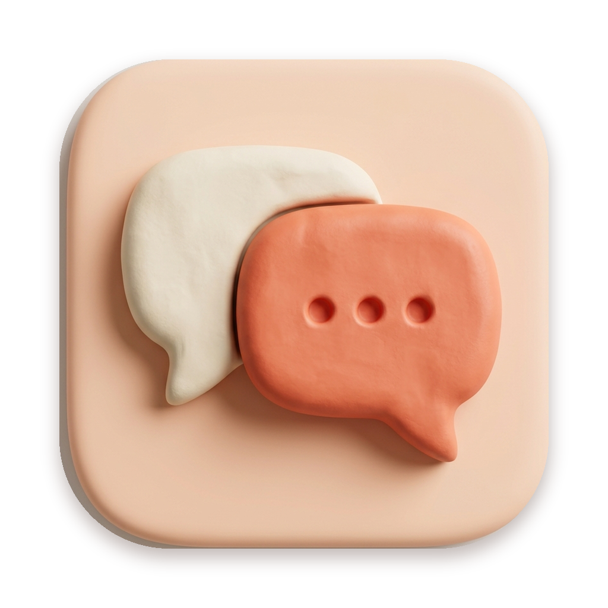
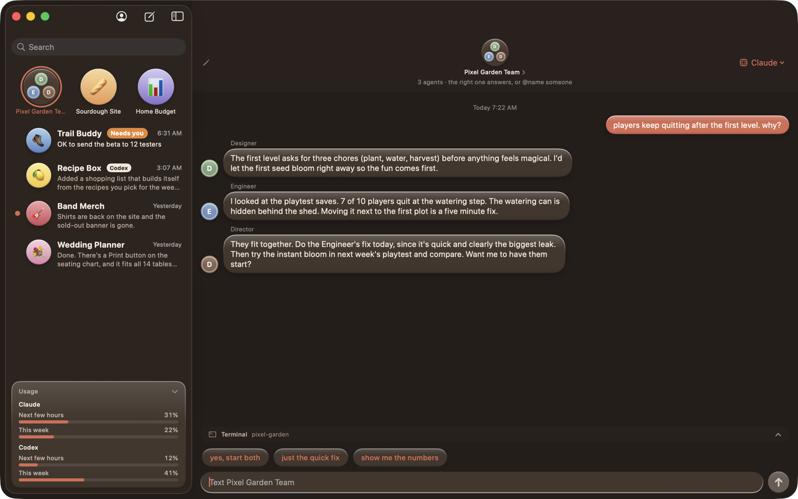
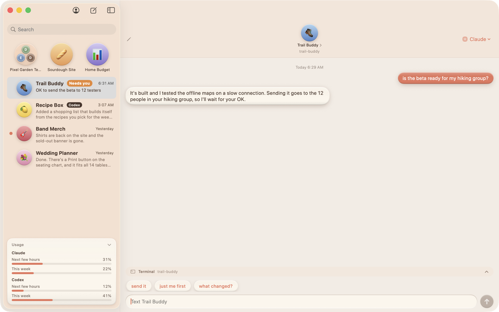

Free for Mac, and now in preview on Windows. Text your projects like people. Claude Code, Codex, Gemini or Grok behind every contact, each one remembers, and you only ever see plain English. Never code.
Free and open source · Mac: macOS 14 or newer, Intel and Apple Silicon · Windows: 10 or 11, 64-bit · Source on GitHub
The Windows preview isn't code-signed yet. If Windows says it "protected your PC", click More info, then Run anyway.
No terminal. No prompts to write. Just say what you want, the way you'd text anyone.
cChat runs the coding tool you already use and sign in to. Pick one per chat, mix them in a group, switch models mid-conversation.
Everything a real messaging app has, pointed at your projects.
Every contact remembers every chat it's in. Long memories tidy themselves so replies stay quick and your plan lasts longer.
Drag one chat onto another. Text the group and the right agent picks it up, or @name someone. They can even talk to each other.
One tap adds a Director, Designer, Engineer and friends to a project, each with its own chat and its own opinion.
When an agent is waiting on your decision, the chat gets flagged and the Dock icon shows a count. Nothing slips.
Drop a screenshot in. Get a picture or a video back. Agents can show you what they made, right in the bubble.
Link your phone and keep texting your projects from the couch. Your Mac stays the brain; the phone is a remote. Phone app coming.
See how much of your Claude and Codex limits you've used, for the next few hours and the week, and when they refill.
Curious? Fold open any reply to see every step the agent took. Close it and it's plain English again.


A Mac on macOS 14 or newer, or a PC on Windows 10 or 11, and an account with at least one of Claude, OpenAI, Google or xAI. cChat's welcome screen installs the tool with its maker's official installer and opens their own sign-in. cChat never sees your login.
cChat is free. It runs the agent tools you install and sign in to yourself, so usage counts against whichever plans you already have. Use one or all four.
One person, as a side project. cChat isn't affiliated with Anthropic, OpenAI, Google or xAI. It just talks to the command-line tools they publish.
On your own computer (Application Support on a Mac, AppData on Windows), backed up hourly. Nothing goes through a server of ours. There isn't one.
Chats with memory, group chats, next-step suggestions, "needs you" flags, pictures, project folders, the usage meter and Show the Work, with Claude Code or Codex. Gemini, Grok, pinning and phone linking are still Mac only. Bugs go in Issues.
By default an agent can edit files in its own project and nothing more. Anything riskier is blocked and shown as a gray note. A "Full access" switch exists per contact, off by default, with an orange warning.